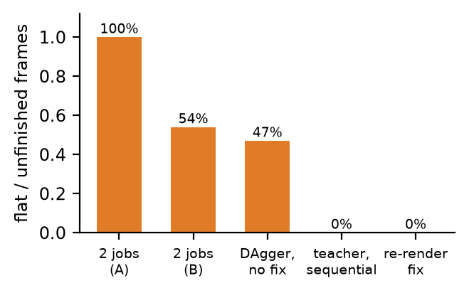
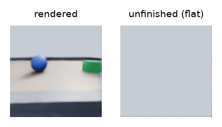
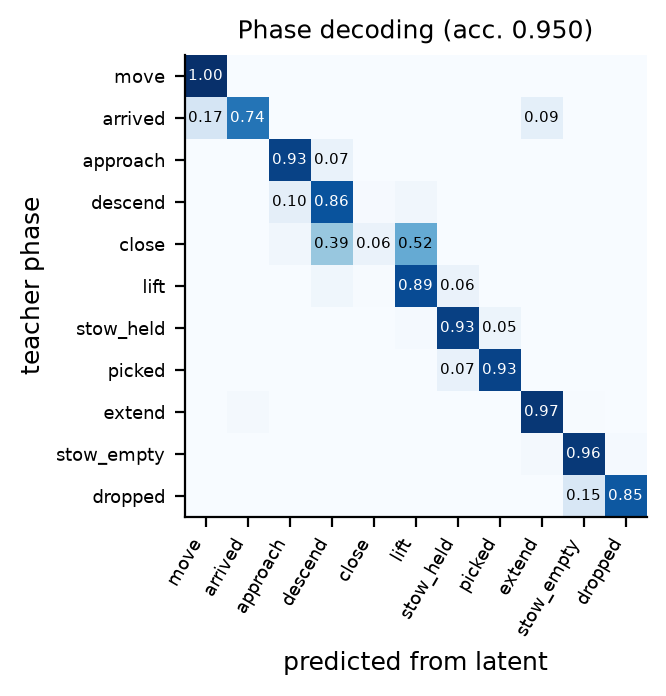
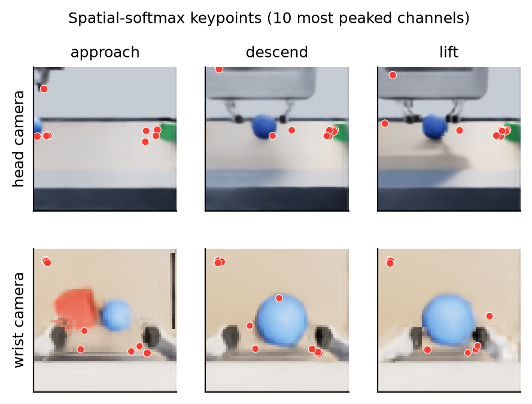
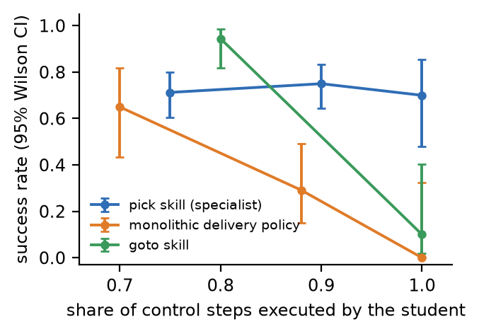
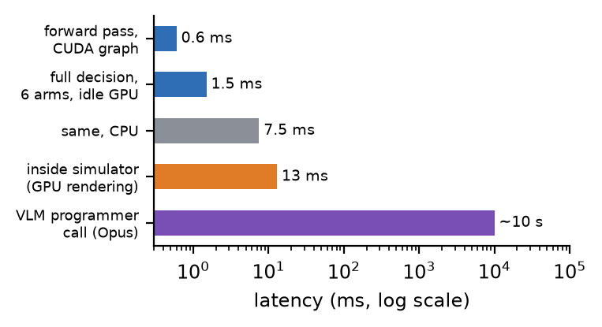

1. Introduction
Learned visuomotor policies usually map images to actions through large encoders. For fast reactive control on cheap hardware the opposite question is interesting: how small can the visual representation be before the robot stops working, and which parts of a task survive the compression? We answer this in simulation with a deliberately tiny model whose only view of the world is a 16-D latent vector computed from two low-resolution cameras.
A compact policy cannot carry long-horizon reasoning, so we pair it with a large vision-language model (VLM) that works at a completely different time scale. The VLM decides what to do every ten seconds or so; the latent policy decides how to move every 67 ms. This mirrors recent systems in which a language model writes programs over robot skills [9, 10, 8], but here the skills themselves are learned from pixels.
Our contributions are:
- A 255k-parameter, camera-only latent mixture-of-experts policy with spatial-softmax keypoints, trained with behaviour cloning, DART noise and DAgger, and executed at 1.5 ms per decision through CUDA-graph inference.
- An analysis of what the 16-D latent encodes (phase decoding, t-SNE structure, keypoint attention, expert specialisation) and offline ablations of camera streams and latent size.
- A closed-loop comparison of a monolithic delivery policy against a skill decomposition, showing why the decomposition is needed at this model size.
- A vision-language programmer built on Claude Opus 5.5, with a measured evaluation of its object-location verification from rendered views.
- A documented set of rendering-pipeline failures that silently corrupt vision datasets in simulation, with fixes.
2. Related Work
Visuomotor learning. End-to-end visuomotor policies [1] introduced the spatial-softmax layer that turns convolutional feature maps into expected 2-D keypoints, and deep spatial autoencoders [2] showed that such keypoints form a compact state for control. We reuse spatial softmax but add an explicit 16-D bottleneck. Recent imitation learners predict action chunks (ACT [5]) or denoise trajectories (Diffusion Policy [6]) with much larger encoders; RT-1 [7] scales tokenised policies to many tasks. Our encoder follows MobileNet-style depthwise-separable blocks [13].
Imitation learning. Behaviour cloning suffers from compounding errors because the learner visits states the teacher never showed. DAgger [3] fixes this by letting the learner drive and querying the teacher for labels; DART [4] injects noise into teacher actions so that recovery behaviour appears in the data. We use both.
Language models over skills. SayCan [8] scores language-specified skills by affordances, Inner Monologue [11] feeds execution feedback back to the planner, Code as Policies [9] has a language model write robot code, and Voyager [10] writes and refines skill programs in Minecraft. Our VLM programmer follows the same pattern of write, execute, observe and revise, using camera images as its feedback.
Mixtures of experts. A softmax gate over expert networks [12] lets a model allocate capacity per input. We use a dense gate with a load-balancing penalty and test whether experts specialise per skill.
3. System
3.1 Simulation and tasks
All experiments run in NVIDIA Isaac Sim 5.1 with PhysX at 120 Hz and a 15 Hz control loop on one RTX A2000 (12 GB). The robot is a Clearpath Ridgeback base with a Franka Panda arm. The base uses Isaac's holonomic model (prismatic x, y and revolute yaw joints with position drives) rather than simulated wheel friction. The arena (Fig. 1) contains a pick table with a 2.5 cm lip, two box obstacles and three open bins (teal, magenta, gold). Objects are a red cube (5 cm), a blue ball (5.6 cm) and a green puck (6.2 cm). Grasps are pure friction between the Panda fingers and the object; nothing is welded or teleported after a reset. A second scene with six Franka arms passing objects around a ring of trays was used to develop the teacher and the end-effector action space.

3.2 Privileged teacher
A scripted teacher reads true object and robot poses from the simulator and labels every state. Navigation uses Dijkstra on a 5 cm occupancy grid inflated by 0.78 m. Grasping uses a descent funnel: the allowed height above the grasp point is min(hpre, 5·(dxy−8 mm)), so a nearly aligned gripper keeps descending while it corrects. An earlier rule that required 1 cm alignment before descending left the student hovering indefinitely. The teacher's decisions depend only on the current state, which lets it relabel any state the student reaches. It never controls the robot in a reported student evaluation.
4. Method
4.1 Latent mixture-of-experts policy
Each camera stream stacks the current and previous frame (6 channels) and passes through a stride-2 3×3 convolution and three depthwise-separable blocks (32→48→64 channels). A spatial softmax converts each of the 64 feature maps into an expected image coordinate, which is concatenated with global average pooling into 192 features per stream. Both streams feed an MLP that ends in a tanh 16-D latent z. Joint angles, gripper width, base velocity and a 13-D one-hot skill command pass through a separate 64-unit MLP. A gate computes softmax weights over four expert MLPs, each predicting a chunk of K = 4 future actions: base x/y velocity, gripper x/y/z velocity in the arm frame, and a gripper close logit. A linear head predicts the teacher's phase from z alone, which both regularises the latent and gives the policy a readable completion signal. The network has 255,249 parameters, two-thirds of them in the experts.
4.2 Action space and skills
The first version predicted joint-angle deltas for a single end-to-end delivery policy. Millimetre grasp
corrections then correspond to joint changes of about 0.005 rad, the same size as the network's regression error, and the
student never learned to close on objects. Predicting gripper velocity in the arm's own frame makes the same correction a signal of
roughly 0.3 in normalised units. We therefore use an arm-frame end-effector action, followed by a fixed IK step, and remove all
rotation from the learned outputs. The task is split into skills: goto(target), pick(color) and
drop(). A heading primitive face(dir) is executed by a proportional controller. In the final
system goto is executed by the grid planner (Sec. 5.4).
4.3 Training and inference
The loss is a smooth-L1 on normalised action chunks, binary cross-entropy on the gripper (weight 0.5), cross-entropy on the phase (0.1) and a gate load-balancing term (0.01). Training uses AdamW with a one-cycle schedule (peak 10−3), batch 256, ±4 px random shifts and brightness/contrast jitter. Teacher episodes are collected with Gaussian action noise (DART); DAgger rounds then let the student execute each step with probability 1−β while the teacher labels every visited state. At run time the four predicted steps of overlapping chunks are blended with exponential weights (temporal ensembling [5]). The whole forward pass is captured as one CUDA graph, which cut decision time for six arms from 7.2 ms to 1.5 ms.
4.4 Vision-language programmer
Claude Opus 5.5 is called through the Claude Code command-line interface with a JSON schema for structured output. Each call receives the operator's instruction, up to four camera images and an execution log, and returns an observation, an assessment of the previous program, a new program of primitives, and a caption. Learned skills report completion through their own phase head; any timeout or failure returns control to the VLM, which must verify the outcome from the images before continuing. The robot holds still while the VLM thinks. The prompt states the arena layout (table to the north, bins to the east) and the recipe pick, face, goto, drop; the VLM chooses objects, order, verification and retries, but does not discover the layout itself.
5. Experiments
5.1 Data-pipeline integrity
Three rendering problems silently corrupted the training images and dominated early results. (i) Isaac cameras default to a near clipping plane of about one metre, so the head camera could not see the table, floor or obstacles directly in front of the robot, and the relay station cameras lost most of the arm. (ii) When two simulator instances share the GPU, or when one instance is heavily loaded, the camera readback returns unfinished frames that contain only sky (Fig. 3). In a controlled test with two concurrent jobs, 100 % and 54 % of head frames were affected; a DAgger round collected before the fix contained 47 %. (iii) In one 120-episode collection the wrist camera produced only black frames; the training filter discarded them, so that data never contributed. We now run one simulator at a time, re-render when a frame has a pixel standard deviation below 10, and drop black or flat frames during training.


5.2 What the 16-D latent encodes
Projecting latents with t-SNE [15] (Fig. 4) separates driving from manipulation and orders the pick phases along a curve from approach through descent and closing to lift. A linear readout of the latent recovers the teacher's phase on 95.0 % of recorded frames (Fig. 5); the largest confusions are between adjacent phases such as approach and descend. The spatial-softmax keypoints (Fig. 6) concentrate on the target object, the fingertips and the table edge in the wrist view; in the head view they track the table's edge and the objects on it.



Expert specialisation. The gate was never told which skill is active, yet usage separates cleanly (Fig. 7):
expert 1 carries 62 % of the gate weight during pick, expert 3 carries 66 % during
drop, and goto is split between experts 2 and 4 (38 % and 43 %). The skill command is an input,
so the gate could route on it directly; the result shows that it does, while the shared latent remains common to all skills.

5.3 Ablations
| Variant | Action error ↓ | Gripper acc. ↑ | Phase acc. ↑ |
|---|
ABLATION_TEXT
5.4 Closed-loop control
Closed-loop results are measured from PhysX object poses, not from the policy's own report.
Figure 8 shows success as the share of steps executed by the student grows. The monolithic delivery policy, trained
end to end on full pick-drive-drop episodes, completed 13/20 deliveries when the teacher executed 30 % of the steps,
7/24 at 12 %, and never succeeded alone. Decomposing the task changes the picture for manipulation: after two pick-focused
DAgger rounds (57/80 and 60/80), the camera-only pick skill succeeded in 14/20 trials with no teacher at all,
and drop succeeded in all 28 attempts during DAgger. Learned navigation did not transfer to pure student control:
goto reached the dock in 34/36 runs with 20 % teacher help but in 1/10 alone, overshooting the dock and wedging
behind an obstacle. For the full system we therefore execute goto with the grid planner. With learned
pick/drop and planned goto, four episodes of two deliveries each produced 4/8
successful deliveries; when the pick succeeded the delivery succeeded 4 times out of 5.

5.5 Vision-language verification
VLM_TEXT
| Views given | Accuracy | Table | In a bin | Floor | Time / call |
|---|
In the recorded programmer run (instruction: blue ball to teal, red cube to gold), Opus wrote
pick(blue) face(east) goto(teal) drop(), verified the ball's disappearance from the table, returned the robot with
face(west) goto(table) face(north), and retried pick(red) after a timeout. After the second timeout it
stopped, stating that the cube had left the table, which was false. Post-hoc inspection showed that the dedicated table and bin
cameras had rendered black in that run, so the model was reasoning from the overview and robot cameras only. The blue ball
was delivered.
5.6 Latency
One forward pass takes 0.6 ms and a full decision for six arms 1.5 ms on an otherwise idle GPU (7.5 ms on the CPU). Inside the running simulator, where the same GPU renders four cameras, a decision takes 6–15 ms, still well below the 67 ms control period. A VLM call takes 6–13 s, three orders of magnitude slower (Fig. 9), which is why it can only act at the level of programs.
5.7 Deployment test: VLM alone vs VLM + latent skill
H2H_TEXT

6. Discussion and Limitations
A 16-D latent is enough to represent where the robot is in the task and to drive a reactive pick from two tiny images, but not enough, with this amount of data, for a single policy to chain driving, grasping and dropping without help. The split into a fast learned skill layer and a slow deliberative layer turned a policy that never finished a delivery into a system that finishes half of them. The remaining failures are mostly pick timeouts, in which the gripper hovers above the object without committing to the descent.
The study has clear limits. Everything is simulated, with a holonomic base model and a fixed arena; the objects and their start positions are nearly fixed, so the results describe a narrow distribution rather than general grasping. Evaluation sets are small (8–20 closed-loop trials per condition), hence the wide intervals in Fig. 8. Navigation in the final system is not learned. The ablations are offline and say little about closed-loop behaviour. The VLM programmer was evaluated on one recorded task plus the static verification test, not on a broad instruction set.
Several of our largest effects came from the vision pipeline rather than the model. Before any modelling question, a visual policy in simulation should check its cameras' clipping planes, detect unfinished or black frames, and avoid sharing the renderer between jobs; otherwise the data, not the network, decides the result.
7. Conclusion
We built and analysed a camera-only latent policy that compresses two low-resolution views into 16 numbers and acts in 1.5 ms, and paired it with a vision-language programmer that writes and repairs skill programs from images. The latent captures task structure and supports a reactive pick skill without supervision at run time, its experts specialise by skill on their own, and a hierarchy is necessary for complete tasks at this model size. Future work: more DAgger rounds for navigation, higher wrist resolution for the last centimetres of the grasp, a recurrent encoder for longer visual memory, and transfer to a physical robot.
References
[1] S. Levine, C. Finn, T. Darrell, P. Abbeel. End-to-end training of deep visuomotor policies. JMLR 17(39), 2016.
[2] C. Finn, X. Y. Tan, Y. Duan, T. Darrell, S. Levine, P. Abbeel. Deep spatial autoencoders for visuomotor learning. ICRA, 2016.
[3] S. Ross, G. Gordon, D. Bagnell. A reduction of imitation learning and structured prediction to no-regret online learning. AISTATS, 2011.
[4] M. Laskey, J. Lee, R. Fox, A. Dragan, K. Goldberg. DART: Noise injection for robust imitation learning. CoRL, 2017.
[5] T. Z. Zhao, V. Kumar, S. Levine, C. Finn. Learning fine-grained bimanual manipulation with low-cost hardware. RSS, 2023.
[6] C. Chi, S. Feng, Y. Du, Z. Xu, E. Cousineau, B. Burchfiel, S. Song. Diffusion Policy: Visuomotor policy learning via action diffusion. RSS, 2023.
[7] A. Brohan et al. RT-1: Robotics Transformer for real-world control at scale. RSS, 2023.
[8] M. Ahn et al. Do as I can, not as I say: Grounding language in robotic affordances. CoRL, 2022.
[9] J. Liang, W. Huang, F. Xia, P. Xu, K. Hausman, B. Ichter, P. Florence, A. Zeng. Code as Policies: Language model programs for embodied control. ICRA, 2023.
[10] G. Wang, Y. Xie, Y. Jiang, A. Mandlekar, C. Xiao, Y. Zhu, L. Fan, A. Anandkumar. Voyager: An open-ended embodied agent with large language models. TMLR, 2024.
[11] W. Huang et al. Inner Monologue: Embodied reasoning through planning with language models. CoRL, 2022.
[12] N. Shazeer, A. Mirhoseini, K. Maziarz, A. Davis, Q. Le, G. Hinton, J. Dean. Outrageously large neural networks: The sparsely-gated mixture-of-experts layer. ICLR, 2017.
[13] A. G. Howard et al. MobileNets: Efficient convolutional neural networks for mobile vision applications. arXiv:1704.04861, 2017.
[14] NVIDIA. Isaac Sim 5.1 documentation. 2025.
[15] L. van der Maaten, G. Hinton. Visualizing data using t-SNE. JMLR 9, 2008.